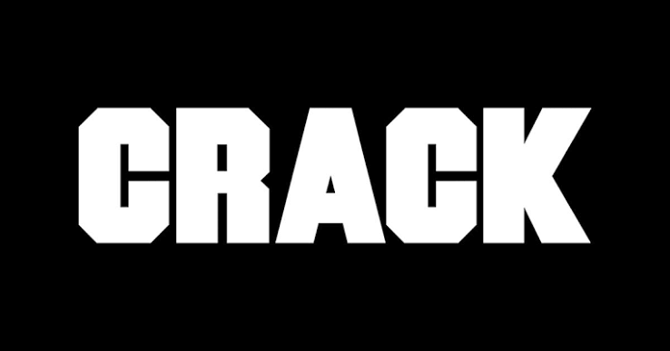

Ctrl
Um mergulho confessional, cru e perfeitamente honesto sobre a juventude, inseguranças e relacionamentos modernos. Em "Ctrl", SZA tece melodias íntimas envolventes sobre uma produção minimalista para falar sobre a busca pelo controle em um mundo analógico e caótico.
O Veredito do Diário
Como o neo-soul revolucionário e vulnerável da SZA desarmou os especialistas.
 Pitchfork
8.4/10
Pitchfork
8.4/10
"O tão aguardado álbum de estreia da cantora de Nova Jersey é um disco de R&B opulento e cru que constantemente testa os limites do gênero. A perspectiva profundamente pessoal de SZA sobre o romance moderno dá vida infinita a essas canções."
"O som de SZA foi rotulado pela imprensa como 'R&B de quarto' — obscuro, inebriante, oblíquo —, mas Ctrl é tudo menos isso. O som é polimórfico, mas mais forte e menos filtrado... É o tipo de álbum que joga linhas de forma casual." (O veículo também incluiu o disco na lista dos 500 Melhores Álbuns de Todos os Tempos).

Crack Magazine ★★★★☆"Liricamente, as músicas parecem uma coleção de memórias românticas profundamente pessoais... Ctrl nem sempre é sobre vencer, bem longe disso, mas é essa honestidade pura que ajudou a coroar SZA como a rainha reinante de sua própria verdade."